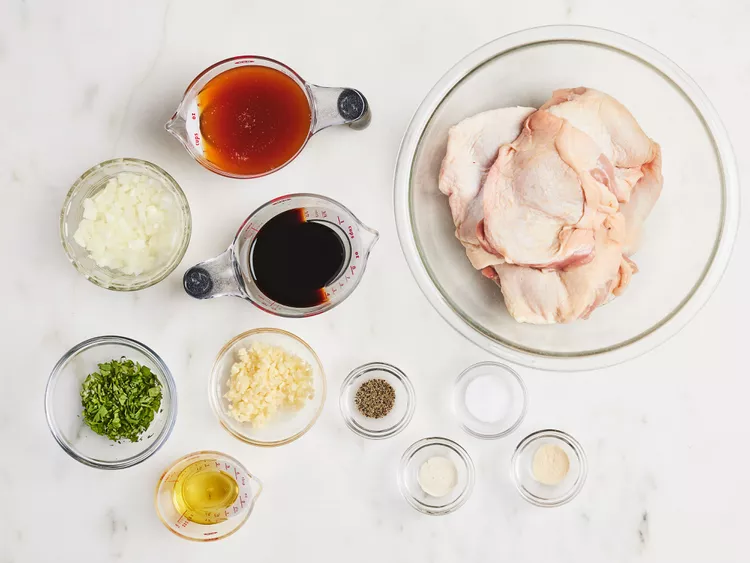
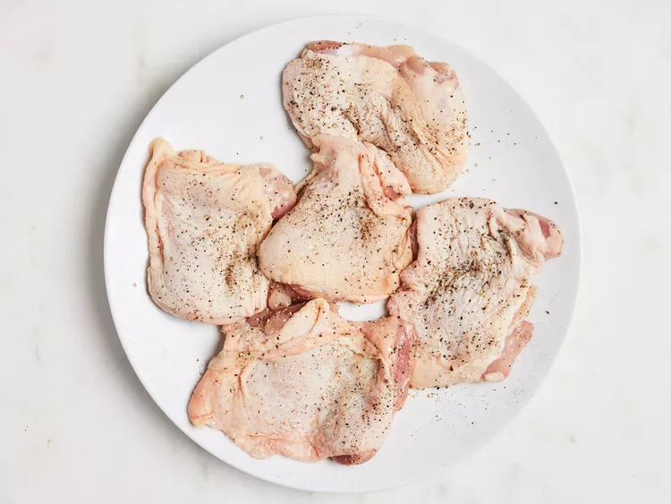
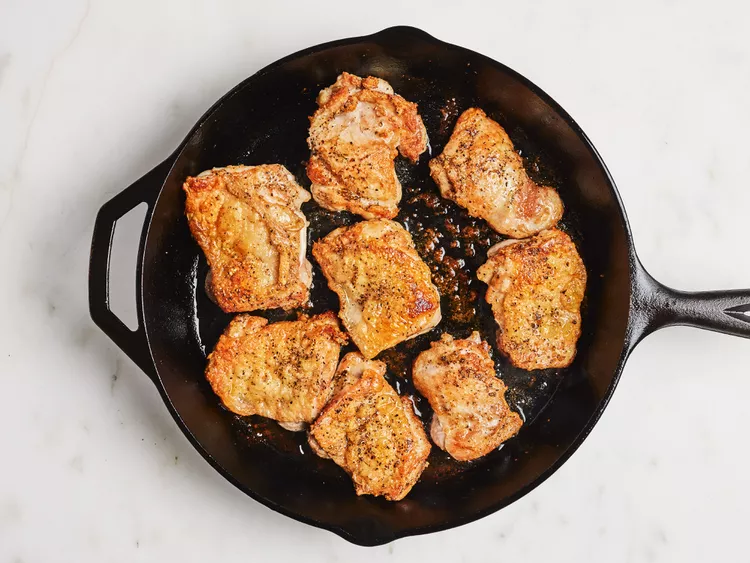
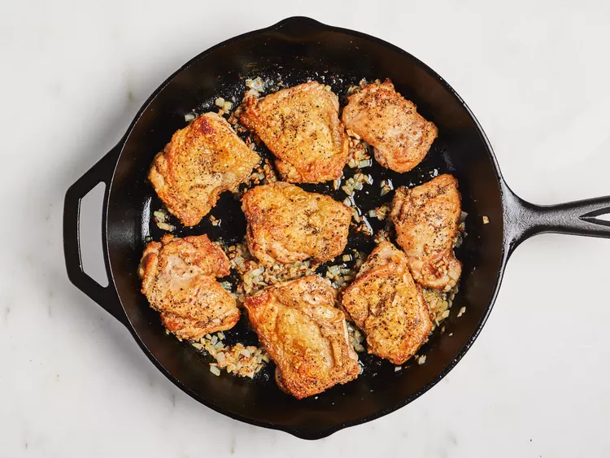
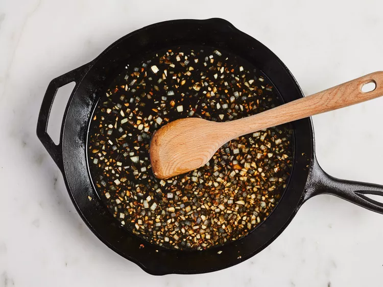
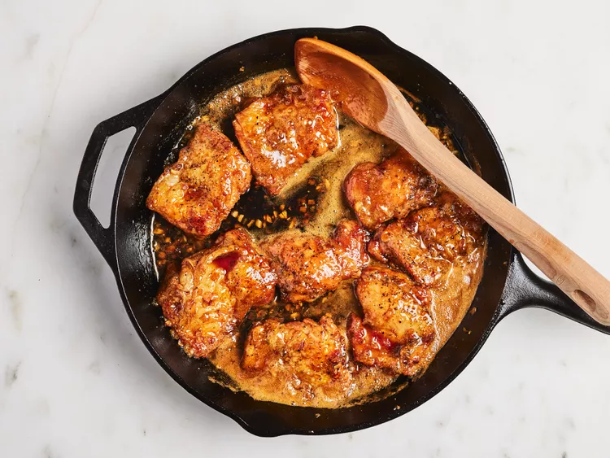
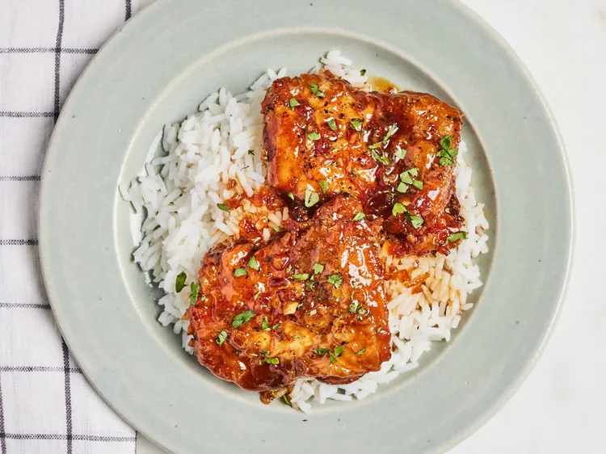

Honey Garlic Chicken Thighs

Honey Garlic Chicken Thighs are a savory-sweet favorite featuring juicy, seared chicken glazed in a rich sauce of honey, soy sauce, and plenty of fresh garlic. The result is a glossy, umami-packed dish that balances caramelized sweetness with bold, aromatic flavors.
This quick, one-skillet meal is perfect for weeknights and traditionally served over rice to capture every drop of the garlic-infused syrup. Finished with fresh cilantro, it offers a restaurant-quality experience that is both simple to prepare and easy to customize.
Ingredients
-
Meat
-
8 (5 ounce) boneless chicken thighs
-
Aromatics & Fresh Produce
-
½ medium onion, finely chopped
-
7 cloves garlic, chopped
-
¼ cup chopped fresh cilantro
-
Pantry Staples
-
1 cup honey
-
½ cup soy sauce
-
2 tablespoons olive oil
-
Seasoning
-
Salt and ground black pepper (to taste)
-
1 pinch onion powder
-
1 pinch garlic powder
- Gather all ingredients.

- Season chicken on both sides with salt and pepper.

- Heat olive oil in a cast iron skillet over medium-high heat. Add chicken and brown on one side, 3 to 5 minutes.

- Flip chicken and add onion and garlic; continue to cook until chicken is mostly (but not fully) cooked and onion and garlic are soft, 5 to 7 minutes more. Remove chicken to a plate.

- Add honey, soy sauce, onion powder, and garlic powder to the skillet. Stir and scrape the bottom of the pan with a wooden spoon to get garlic and onion to mix with the liquid.

- Return chicken to the skillet, cover, and reduce heat to medium. Cook until no longer pink in the center and juices run clear, about 10 more minutes, turning once halfway through. An instant-read thermometer inserted into the center of a thigh should read at least 165 degrees F (74 degrees C).

- Arrange chicken on a serving plate and drizzle liquid from the pan on top. Sprinkle with cilantro to serve.
- Enjoy

Home